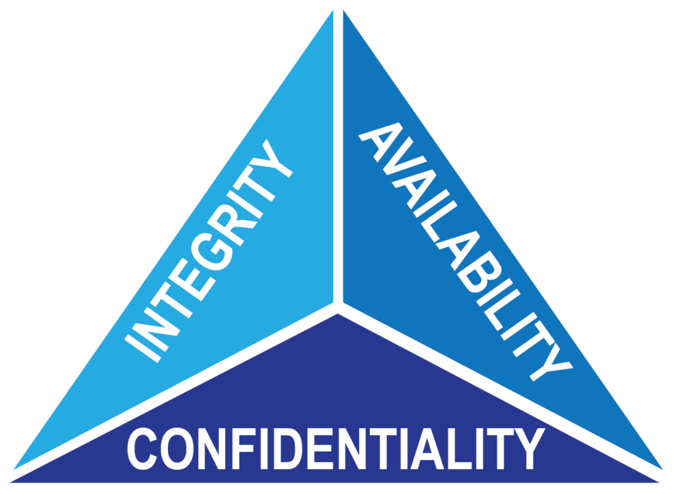

What is the CIA triad?
 Image by NISTThe CIA triad is the three pillars of information security: Confidentiality, Integrity, and Availability.
- Confidentiality keeps one's data private. This implies that only authorized users and processes should be able to access or modify data.
- Integrity means that the data is guarded against improper modification or destruction of information. This also ensures that the information is genuine and can't be denied by the sender or receiver.
- Availability allows data to be accessed reliably in a timely fashion by authorized users to use and obtain.
On its own, each one could be seen as an important piece of the puzzle. However, to fully see the picture one must first put each piece together (why it's called the triad). When that is accomplished the infosec team has this foundation to go off of, they can then know what frameworks and policies are needed to effectively secure themselves. Though at times there could be tensions within the triad that can restrict one another, this will ultimately help determine what priorities to start focusing on.
Why is the CIA triad important?
The CIA triad allows any team to look at something with a simple-to-use mental checklist to evaluate what they have compared to what is out there in the market or what they plan on developing in-house. This checklist will allow anyone to look at what matters most: the validity of the company compared to the most cost-effective option. This can be done by looking at the triad and asking questions like: Will this platform allow our data/assets to be more secure? Can we rely on this service to ensure data integrity? Will upgrading our infrastructure make data more accessible?
The security team's primary responsibility is to evaluate the business needs to effectively mitigate the risk of what the bad actors (black hat) are trying to do. Doing this helps them do their secondary responsibility of making the company money. This could be accomplished by knowing the triad and evaluating what matters most for the company. If their company deals in healthcare they may need to comply with HIPPA. However, looking at an e-commerce company focusing on the same level of security may be detrimental for them since they would care more about ensuring that they follow the PCI DSS. Also, if looking at the level of complexity of the types of hardware and software needed is different. So being mindful about the triad regarding hardware and software is necessary to avoid wasting company resources.
Example of the CIA triad
Photo by ecemwashere on UnsplashWhen looking at these concepts imagine a three-legged stool. If it only has two legs then isn't a fully functional product. If the legs aren't the same height whoever sits on it will have to be mindful of the shorter leg(s) to constantly compensate when sitting. Finally, with three uniform legs, you still need to be mindful of who the intended user(s) of the stool is for because it could still be unsuitable due to its height.
Let's now look at an example of how the healthcare industry and e-commerce of companies in mind.
Healthcare industry
Think about a situation where someone needs medication:
- When contacting the doctor they want confidentiality of the conversation. The security team wants authorized users to use two-factor authentication: something you know [i.e. password], something you have [i.e. smart card], and something about you [i.e. fingerprint].
- Retrieving medication requires integrity, so there is no doubt that the prescription is unaltered.
- The availability log on to get the medication prescribed, ordered, and retrieved is essential.
E-Commerce
Let's imagine someone is creating an e-commerce website:
- Customer data is the simplest idea to highlight the need for confidentiality. To keep their trade secrets and other data from being leaked.
- When thinking of integrity they want to make sure the custom product is tailored correctly. Also, internally, ensuring the availability of said item to be actually in stock.
- The need for availability means that customers can log into the website reliably. Internally, consider that third-party services (i.e. payment gateways, APIs) should have both high availability and fallback mechanisms for critical third-party integrations.
These are sample examples of how the triad can be practically applied. There are several more for each leg, and if you have specific needs, you can contact me.
Photo by 愚木混株 cdd20 on Unsplash